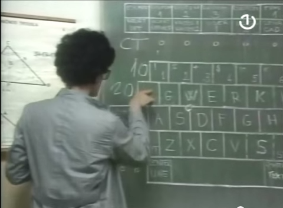

Učenici usmjerene škole "Stipe Šuvar izmislili cijepanje atoma!
Datum objave: 23.04.2005
Protozvijezda povećala se 35 puta u samo dvije godine gutajući gas iz svoje okoline u maglini NGC 1977 u sklopu sazviježđa Orion. Nakon što su naučnici primijetili zvijezdu u ranom stadiju razvoja, oni su ponovo uz pomoć osjetljivih instrumenata detektovali nastavak silovitog rasta.